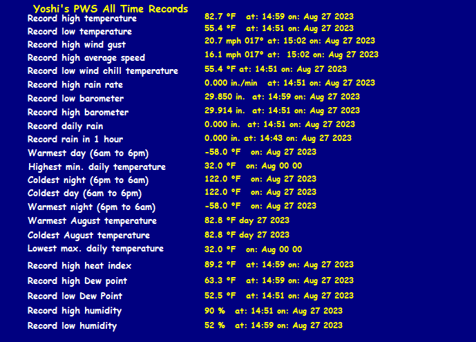

MDZ013 There are no active watches, warnings or advisories

Code Green for Minor Flash Flooding risk on August 31st. This day in my weather history: None
| Weather Data | |||
|---|---|---|---|
| LAST READING AT TIME: 12:20 PM DATE: August 28 2023 | |||
| Current Weather | Dry | Current Temperature | 68.9°F (20.5°C) (Heat Index 68.9°F ), Apparent temp 67.7°F |
| Maximum Temperature (since midnight) | 82.8°F at: 2:59 PM | Minimum Temperature (since midnight) | 55.4°F at: 2:51 PM |
| Average windspeed (ten minute) | 0.0 mph | Wind Direction (ten minute) | NNE (16°) |
| Windchill Temperature | 68.9°F | Maximum Gust (last hour) | 6.9 mph at: 11:48 AM |
| Maximum Gust (since midnight) | 20.7 mph at: 3:02 PM | Maximum 1 minute average (since midnight) | 16.1 mph at: 3:02 PM |
| Rainfall (last hour) | 0.00 in. (0.0 mm) | Rainfall (since midnight) | 0.00 in. (0.0 mm) |
| Rainfall This month | 8.43 in. (214.1 mm) | Rainfall To date this year | 25.53 in. (648.5 mm) |
| Maximum rain per minute (last hour) | 0.00 in/min | Maximum rain per hour (last 6 hours) | 0.00 in/hour |
| Yesterdays rainfall | 0.00 in | DewPoint | 32.0°F (Wet Bulb :52.4°F ) |
| Humidity | 85 %, Humidex 65.0°F | Barometer corrected to msl | 29.940 in. (1013.9 hPa) |
| Pressure change | 0.00 in. (last hour) | Trend (last hour) | STEADY |
| Pressure change (last 12 hours) | +0.03 in | Pressure change (last 6 hours) | +0.03 in |





Moresby, Papua New Guinea (AYPY) 09-26S 147-13E 49M Aug 28, 2023 - 11:00 AM EDT / 2023.08.28 1500 UTC Wind: from the SSE (150 degrees) at 12 MPH (10 KT):0 Visibility: greater than 7 mile(s):0 Sky conditions: overcast Temperature: 77 F (25 C) Dew Point: 71 F (22 C) Relative Humidity: 83% Pressure (altimeter): 29.85 in. Hg (1011 hPa) ob: AYPY 281500Z 15010KT 9999 OVC070 25/22 Q1011= cycle: 15 Filton Private , United Kingdom (EGTG) 51-31N 002-35W Dec 21, 2012 - 06:50 AM EST / 2012.12.21 1150 UTC Wind: from the W (260 degrees) at 8 MPH (7 KT):0 Visibility: greater than 7 mile(s):0 Sky conditions: mostly clear Temperature: 48 F (9 C) Dew Point: 44 F (7 C) Relative Humidity: 87% Pressure (altimeter): 29.85 in. Hg (1011 hPa) ob: EGTG 211150Z 26007KT 9999 FEW020 09/07 Q1011 cycle: 12 Honiara / Henderson, Solomon Islands (AGGH) 09-25S 160-03E 9M Aug 28, 2023 - 11:00 AM EDT / 2023.08.28 1500 UTC Wind: from the S (180 degrees) at 3 MPH (3 KT):0 Visibility: greater than 7 mile(s):0 Sky conditions: partly cloudy Weather: Cumulonimbus clouds observed Temperature: 73 F (23 C) Dew Point: 73 F (23 C) Relative Humidity: 100% Pressure (altimeter): 29.77 in. Hg (1008 hPa) ob: AGGH 281500Z 18003KT 9999 FEW014 FEW015CB SCT280 23/23 Q1008 cycle: 15 Camp Springs / Andrews Air Force Base, MD, United States (KADW) 38-49N 076-51W 88M Aug 28, 2023 - 11:55 AM EDT / 2023.08.28 1555 UTC Wind: from the ENE (070 degrees) at 7 MPH (6 KT):0 Visibility: 10 mile(s):0 Sky conditions: clear Temperature: 73.2 F (22.9 C) Dew Point: 67.3 F (19.6 C) Relative Humidity: 81% Pressure (altimeter): 29.97 in. Hg (1014 hPa) ob: KADW 281555Z AUTO 07006KT 10SM CLR 23/20 A2997 RMK AO2 SLP154 T02290196 cycle: 16

Use the RELOAD facility on your browser to retrieve the latest data.